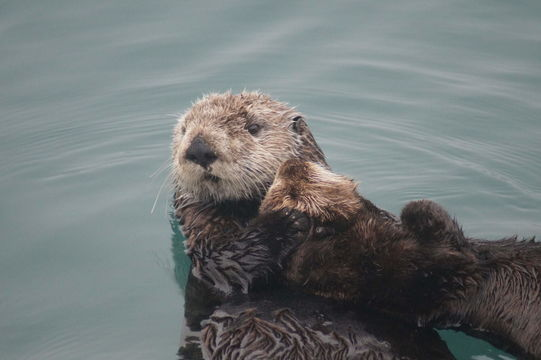

HOME COMMUNITY ISSUE
HOME
개리는 오리과의 새이다. 몽골, 중국 북부, 러시아 남동부 등지에서 서식한다. 중국 거위의 야생종이다. 대한민국에서는 매우 드문 겨울철새로, 현재 지구상의 생존 개체수는 100,000마리 가량으로 추정된다.먹이를 찾기 위해 부리로 땅을 판다. 식용으로 사육되기도 하며, 서식지의 감소와 남획으로 야생 절멸 위기에 처해 있다.[1] 대한민국에서는 1982년 11월 4일 흑기러기와 함께 천연기념물 제325호로 지정되었으며, 멸종위기야생동식물 2급으로 지정되었다. 먹이로 수생식물이나 육상 식물의 잎, 조류(藻類), 조개류 따위를 먹으며 6월경에 4~6개의 알을 낳아 기른다.
